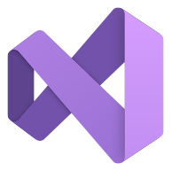
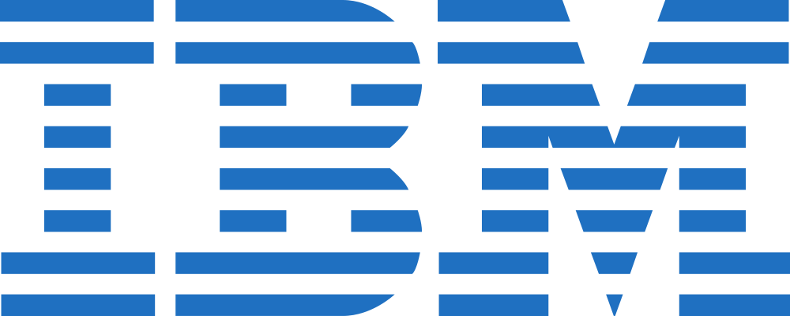

Experiencia
SIMAC S.A.S
Tecnico en Sistemas
Realicé
Gestión integral de la infraestructura tecnológica, asegurando la continuidad operativa y la integridad
de la información corporativa.
• Gestión de Identidades: Administración de servidores Linux para la creación de
credenciales, gestión de permisos de carpetas y bajas de usuarios, garantizando la seguridad.
• Seguridad de Datos: Diseño y ejecución de planes de Backup críticos y migración de
información en procesos de renovación tecnológica.
• Virtualización y Software: Configuración de entornos aislados mediante VirtualBox y
despliegue automatizado de software corporativo.
• Mantenimiento: Supervisión de hardware y software mediante mantenimientos preventivos
y correctivos bajo estándares de calidad.
ALGAR TECH
Agente de Soporte Técnico
Realicé servicios de atención técnica en modalidades presencial y virtual, garantizando la operatividad
de los usuarios finales y el cumplimiento de estándares corporativos.
Gestión y Control de Activos:
• Responsable de la administración y trazabilidad de inventarios de hardware.
• Monitoreo de asignaciones de equipos para asegurar el control de activos y la
ubicación precisa de recursos tecnológicos por usuario.
• Soporte técnico multiplataforma para cuentas globales, optimizando los tiempos de
respuesta y resolución.
IBM (Algar Tech)
Agente de Soporte Técnico
Ejecución técnica de un proyecto de cifrado para el Banco de Bogotá, asegurando la protección de activos críticos de la entidad.
• Cifrado de Datos: Implementación de protocolos de seguridad en discos duros para garantizar la integridad de la información bancaria.
• Gestión vía CLI (CMD): Uso de la interfaz de línea de comandos para la configuración y despliegue de políticas de seguridad locales.
• Cumplimiento de Estándares: Trabajo bajo estrictas normativas de seguridad informática y protección de datos.
Epayco - Davivienda
Tecnólogo en Desarrollo y Análisis de Software:
Participe activamente en el desarrollo de soluciones técnicas para la gestión de datos y optimización de procesos transaccionales.
• Automatización con Python: Creación de scripts utilizando Pandas para la generación de reportes, logrando una reducción del 60% en tiempos de procesamiento.
• Análisis de Datos: Diseño y ejecución de consultas avanzadas en SQL (MySQL) para el análisis de transacciones masivas y segmentación.
• Seguridad y Configuración: Implementación de integraciones seguras mediante el uso de variables de entorno para la protección de credenciales de acceso.
• Apoyo Estratégico: Colaboración técnica con los equipos de marketing y tecnología para facilitar la toma de decisiones basada en datos.
Teleperformance / Liberty PR
Soporte Técnico Especializado (Nivel 3):
Resolución de incidencias críticas y escalamientos complejos, actuando como última instancia técnica para clientes corporativos y residenciales.
• Análisis y Diagnóstico: Gestión de casos de alta complejidad en servicios de telecomunicaciones mediante herramientas de diagnóstico remoto.
• Documentación Técnica: Creación de soluciones para la base de conocimiento interna, facilitando procesos de resolución para agentes de niveles 1 y 2.
• Habilidades Consultivas: Resolución de conflictos en facturación y servicios bajo estrictas métricas de calidad y satisfacción .
Hogar & Tendencias
Desarrollador Freelancer (Pyme)
Lideré la transformación digital de un negocio de mobiliario, integrando soluciones de desarrollo web y marketing digital.
• Desarrollo Frontend: Diseño y despliegue de sitio web utilizando HTML5, CSS3 y JavaScript, optimizado para dispositivos móviles y desplegado mediante Netlify.
• Estrategia Digital: Gestión de marca en Instagram y creación de contenido audiovisual,mejorando la visibilidad del catálogo de productos.
• Soluciones Tecnológicas: Implementación de flujos de trabajo digitales para mejorar la comunicación directa con clientes vía WhatsApp.
• Diseño UX/UI: Creación de layouts modernos centrados en la experiencia del usuario para facilitar la navegación y conversión.
Cursos
De Interés
Instituto Norte La Estrella: Bachillerato Académico y Técnico en seguridad informática.
Puede ser de tu interés
Registro de información, elaboración de informes técnicos y mantenimiento de equipos de cómputo.
Formación y Cursos
Formación Académica
- Bachillerato Académico - Instituto Norte – La Estrella (2019)
- Técnica en Sistemas - Sena La Salada – La Estrella (2021)
- Tecnologo en Análisis y Desarrollo de Software -Sena Itagui Calatrava(2025)
Cursos y Certificaciones
- Técnico en Seguridad Informática - Capacítate para el empleo (2020)
- Prácticas de Ofimática - Capacítate para el empleo (2020)
- Curso Inglés Básico Nivel 1
- Bancarización y Ciberseguridad
- Email Marketing y Mensajería Móvil Instantánea
- Herramientas de Gestión de Relacionamiento con el Cliente
- Marketing en Redes Sociales y Analítica Web
- Servicio de Atención al Cliente por Teléfono
- Scrum Foundation Professional Certification (SFPC)
- Python Esencial
- Desarrollo de Aplicaciones Web en Tiempo Real con JavaScript y Node.js
Habilidades Técnicas
Lenguajes y Tecnologías


Herramientas y Entornos





